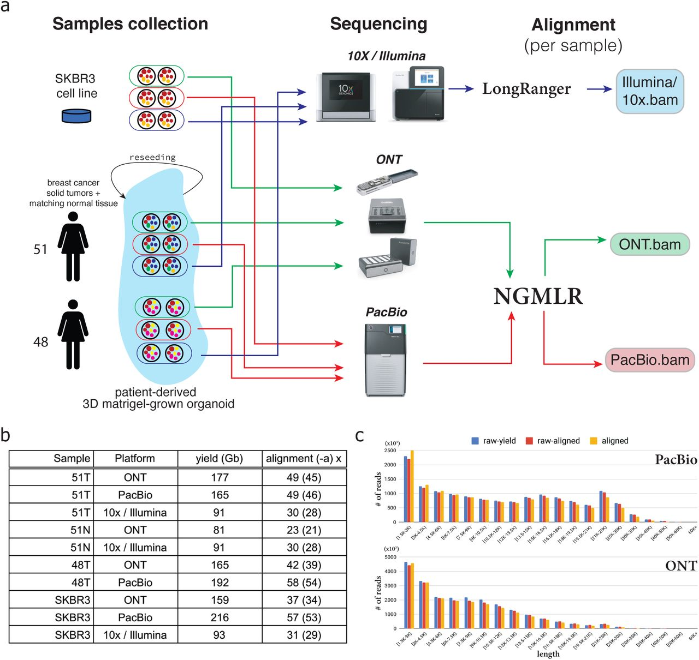

| Improved identification of structural variants (SVs) in cancer can lead to more targeted and effective treatment options as well as advance our basic understanding of disease progression. We performed whole genome sequencing of the SKBR3 breast cancer cell-line and patient-derived tumor and normal organoids from two breast cancer patients using 10X/Illumina, PacBio, and Oxford Nanopore sequencing. We then inferred SVs and large-scale allele-specific copy number variants (CNVs) using an ensemble of methods. Our findings demonstrate that long-read sequencing allows for substantially more accurate and sensitive SV detection, with between 90% and 95% of variants supported by each long-read technology also supported by the other. We also report high accuracy for long-reads even at relatively low coverage (25x-30x). Furthermore, we inferred karyotypes from these data using our enhanced RCK algorithm to present a more accurate representation of the mutated cancer genomes, and find hundreds of variants affecting known cancer-related genes detectable only through long-read sequencing. These findings highlight the need for long-read sequencing of cancer genomes for the precise analysis of their genetic instability. |  |
| » | Comprehensive analysis of structural variants in breast cancer genomes using single molecule sequencing Aganezov et al. (2019) bioRxiv. doi: https://doi.org/10.1101/847855 | |
| » | Reconstruction of clone- and haplotype-specific cancer genome karyotypes from bulk tumor samples Aganezov et al. (2019) bioRxiv. doi: https://doi.org/10.1101/560839 | |
| » | SKBR3.specific.all.vcf: SKBR3.specific.all.vcf |
| PacBio reads aligned with NGMLR: | reads_lr_skbr3.fa_ngmlr-0.2.3_mapped.bam |
| PacBio pbsv VCF: | SKBR3_PACBIO_pbsv.vcf |
| PacBio Sniffles VCF: | SKBR3_PACBIO_sniffles.vcf |
| » | Oxford Nanopore reads aligned with NGMLR: skbr3.ont.sort.bam | ONT pbsv VCF: SKBR3_ONT_pbsv.vcf | ONT Sniffles VCF: SKBR3_ONT_sniffles.vcf | |||
| » | 10X Genomics Linked Reads aligned with LongRanger: skbr3.10x.sort.bam | 10X GrocSV VCF: SKBR3_10x_grocsvs.vcf | 10X SVABA Indel VCF: SKBR3_10x_indel_svaba.vcf | 10X SVABA SVs VCF: SKBR3_10x_sv_svaba.vcf | 10X LongRanger Dels VCF: SKBR3_10x_longranger_dels.vcf | 10X LongRanger Large SVs VCF: SKBR3_10x_longranger_large_svs.vcf | 10X Lumpy SVs VCF: SKBR3_10x_lumpy.vcf | 10X Manta SVs VCF: SKBR3_10x_manta.vcf | ||||||||
| » | Illumina PE550 reads aligned with BWA-MEM: SKBR3_550bp_pcrFREE_S1_L001_AND_L002_R1_001.101bp.bwamem.ill.mapped.sort.bam | |